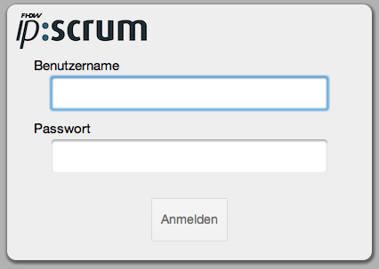
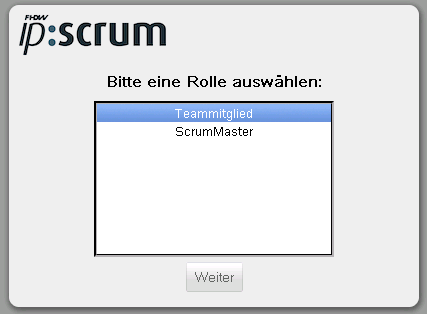
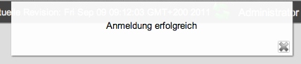

Anmeldung
IP-Scrum ist eine Mehrbenutzeranwendung, daher ist es zum Start der Anwendung zunächst notwendig, sich mit Benutzername und Passwort zu authentifizieren.
Beim ersten Start der Anwendung steht nur der Administrator (Benutzername: admin, Passwort: admin) zur Anmeldung bereit. Die Anmeldedaten dieses Kontos sollten aus Sicherheitsgründen nach der Einrichtung abgeändert werden.
Geben Sie Ihren Benutzernamen und Ihr Passwort in die vorgesehenen Felder ein und klicken Sie auf den Button "Anmelden".

Wenn Ihnen mehrere Rollen im System zugeordnet sind, werden Sie in einem weiteren Dialog aufgefordert, eine Rolle zur Anmeldung am System zu wählen. Wählen Sie die Rolle aus, mit welcher Sie bei dieser Anmeldung arbeiten wollen, und klicken Sie auf "weiter".

Nach erfolgreicher Anmeldung wird eine Erfolgsmeldung am oberen Rand des Fensters dargestellt.

Created with the Personal Edition of HelpNDoc: Full featured Documentation generator